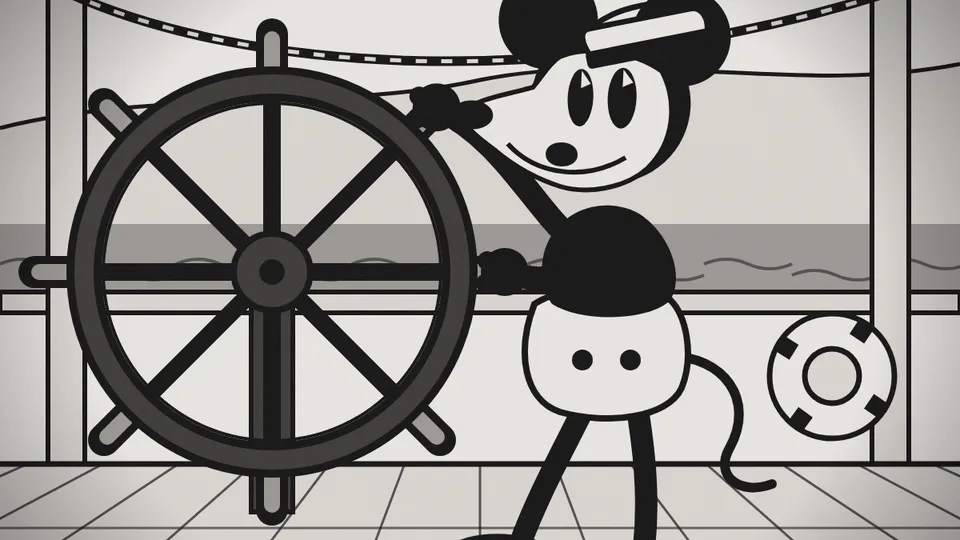
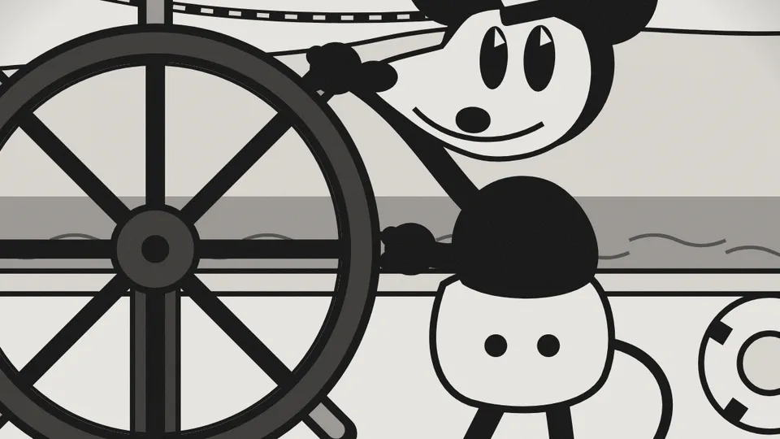
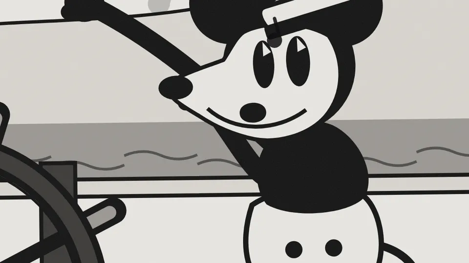
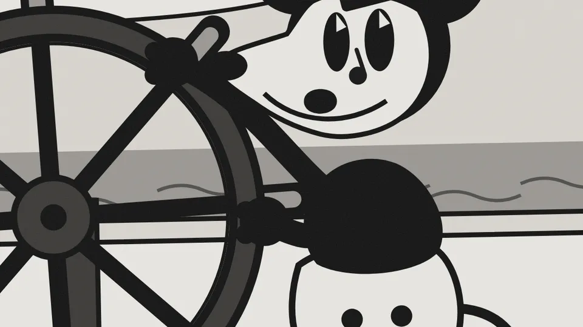

Construir: el asistente, paso a paso
Tú pegas el pedido; el agente carga las skills, propone el plan y escribe la pieza. Esto es lo que debes ver en cada paso.
Tú → agente
Rol: Eres animador 2D y desarrollador front-end. Solo HTML, CSS y SVG.
Contexto: Taller; público que no programa; visor del aula y teléfono.
Tarea: Crea willie/index.html, pieza de 20 s con Willie al timón…
Límites: Solo el diseño de 1928. Sin CDN. Ningún corte < 0,25 s.
Formato: Un HTML; escenas con data-start y data-duration.
Comprobación: ?t=7 muestra el paneo a mitad, quieto; dura 20,0 s.
Agente
→ Skill "pedido-seis-partes"
→ Skill "animacion-abierta"
Pedido completo: seis partes, nada en corchetes.
Plan · 9 escenas en la rejilla de 120 bpm:
1 encendido 0–2 · 2 título 2–4 · 3 ráfaga 4–6 · 4 cámara 6–10
5 profundidad 10–13 · 6 salto 13–16 · 7 pregunta · 8 ¡No! · 9 créditos
¿Escribo willie/index.html? (s/n/a)




1 · el pedido2 · skills y plan3 · ?t=1.54 · ?t=7.55 · ?t=13.96 · ?t=18.5- 1
Pegas el pedido
Carpeta vacía con
willie.svg. Pegas el prompt de Materiales entero, con sus seis partes. - 2
El agente carga las skills y propone el plan
Verás
→Skill "pedido-seis-partes"y→Skill "animacion-abierta", luego nueve escenas con su segundo. Respondes. - 3
Escribe index.html y lo abres
Fondo tinta y botón Reproducir.
?t=1.5: la pantalla se enciende y el comando se escribe. - 4
Compruebas la cámara
?t=7.5: plano general del vapor a mitad del paneo, quieto. Es la comprobación del pedido. - 5
Compruebas los principios
?t=13.9: Willie en el aire, en el arco del salto;?t=14.9: aplastado al caer. - 6
Reproduces entero
Dura 20,0 s y termina en «¡No!» con los créditos. Si algo falla, segundo pedido: dónde, qué, cámbialo, solo eso.